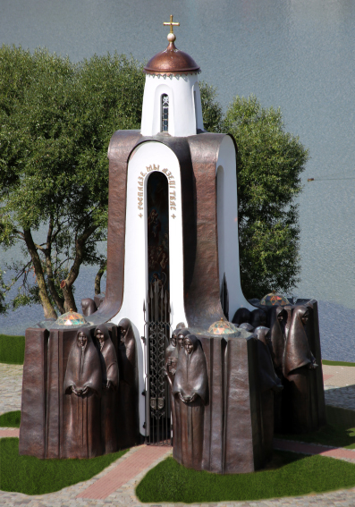
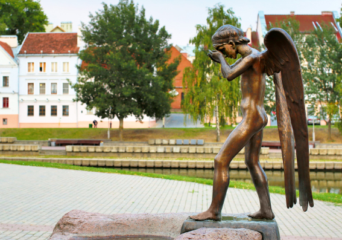
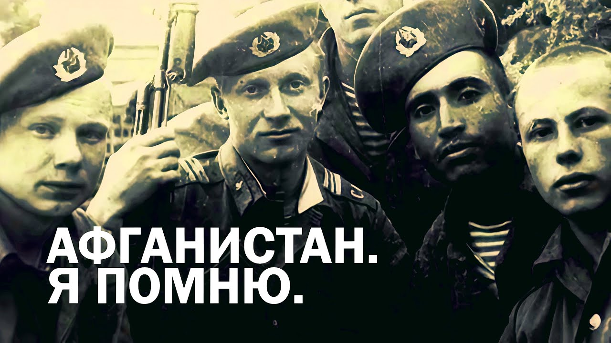

Городской этап республиканского конкурса
У каждого времени свои герои
Девять лет войны. Около тридцати тысяч белорусов. 771 не вернулся домой. Этот плакат — о тех, чьи имена остались на камне и в памяти.
Нажимайте на имена, годы и фотографии: за каждым элементом — отдельная история.

15 февраля 1989
Война закончилась.
Память — нет.
Последняя колонна советских войск покинула Афганистан 15 февраля 1989 года. В Беларуси этот день стал Днём памяти воинов-интернационалистов. За официальными цифрами — конкретные судьбы: матери, жёны, дочери, друзья и однополчане.
Земляки
Пять имён, которые нельзя забыть
Они были разными: сапёр, пулемётчик, комбат, вертолётчик, пограничник. Их объединяет одно — звание Героя Советского Союза и белорусская земля, которая помнит.
Четверо Героев родились на белорусской земле. Пятый — Иван Барсуков — родился на Ставрополье, но его офицерская служба прошла в Бресте: имя Героя носит 5-я пограничная застава Брестской пограничной группы.
Хроника
Девять лет,
которые изменили судьбы
Выберите дату на ленте времени, чтобы увидеть, что происходило в этот день — и как это связано с Беларусью.
25 декабря 1979
Ввод войск
Подразделения 40-й армии переходят границу Афганистана. В числе первых — десантники 103-й гвардейской воздушно-десантной дивизии, чьи полки дислоцировались в Витебске.
Минск · Свислочь
Остров, на котором
живёт память
Мемориальный комплекс «Памятник воинам-интернационалистам» — филиал Белорусского государственного музея истории Великой Отечественной войны. Четыре фотографии — четыре точки входа в его историю.

Мемориал задуман как памятник воинам, погибшим в Афганистане, но стал символом скорби по всем сыновьям и дочерям Беларуси, павшим на чужой земле.
- 1996год открытия
- 30 000 м³земли для острова
- 4алтаря с именами
- 12имён пропавших без вести
Книга памяти
Имена,
выбитые на камне
На стенах мемориала — 768 имён. Найдите знакомую фамилию, выберите букву или откройте список пропавших без вести. За каждым именем — человек, семья и недописанная биография.
Пропавшие без вести
2 августа 2017 года у мемориала открыт памятный камень воинам-интернационалистам, пропавшим без вести при исполнении обязанностей военной службы в Афганистане.
Список приведён по публикации Белорусского государственного музея истории Великой Отечественной войны и расположен по алфавиту. Официально в Афганистане погиб 771 белорус; 12 человек до сих пор числятся пропавшими без вести. В разных источниках данные могут уточняться.
Цифры
За каждой цифрой — человек
Нажмите на цифру, чтобы увидеть, что за ней стоит и откуда она взята.
Смотреть
Афганистан.
Я помню
Документальный фильм киностудии «Беларусьфильм». Герои — белорусские ветераны Афганской войны. Для них исполнение интернационального долга — не только воспоминание.
Открыть на YouTube
Киностудия «Беларусьфильм»
Источник: Витебский облисполкомСамым тяжёлым был груз 200 — цинковые гробы с погибшими, которые мы вывозили из Афганистана в разные концы Советского Союза.
Николай Стативко, подполковник в запасе, Витебск
Источники
Откуда факты
При подготовке плаката использованы материалы белорусских музеев, библиотек, государственных органов и СМИ. Все ссылки открываются в новой вкладке.
- 01 Мемориальный комплекс «Памятник воинам-интернационалистам»
- 02 К 37-й годовщине вывода войск из Афганистана
- 03 Семейный альбом Героя Советского Союза Николая Петровича Чепика
- 04 Семейный альбом Героя Советского Союза Андрея Александровича Мельникова
- 05 К 70-летию со дня рождения Героя Советского Союза Василия Васильевича Пименова
- 06 Пименов Василий Васильевич
- 07 Щербаков Василий Васильевич
- 08 Иван Петрович Барсуков
- 09 Вывод войск из Афганистана — 37 лет: Беларусь вспоминает героев
- 10 Красные гвоздики и зажжённые свечи: в Минске почтили память воинов-интернационалистов
- 11 В Витебске отметили День памяти воинов-интернационалистов
- 12 «Афганистан. Я помню». Документальный фильм
- 13 «Афганистан. Без права на забвение»
- 14 Наши земляки — герои афганской войны 1979—1989 гг.
Фотографии мемориала и портреты Героев публикуются в образовательных целях с указанием источников. Права на изображения принадлежат их правообладателям. Если вы заметили неточность, пожалуйста, сверьтесь с первоисточником по ссылке.